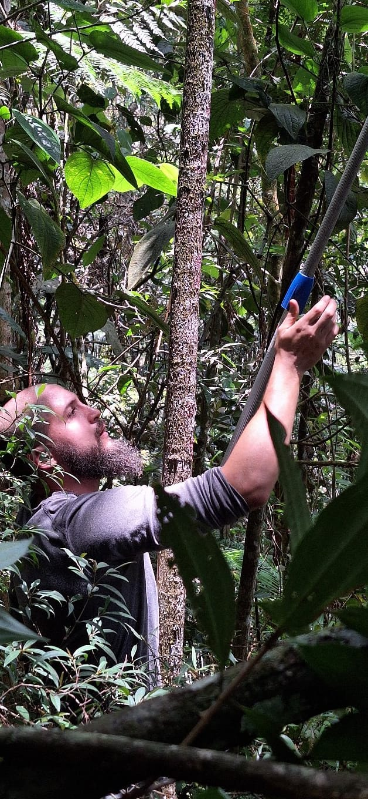

01
Diagnóstico e avaliação ambiental
Levantamentos ecológicos, florísticos, fitossociológicos e análises técnicas para compreender a estrutura, composição e potencial ambiental de cada área.
Atuamos com diagnóstico ambiental, regularização, restauração ecológica e planejamento técnico para propriedades rurais, empreendimentos e áreas que demandam soluções ambientais seguras, consistentes e tecnicamente fundamentadas.

Unimos ciência ecológica, leitura ambiental da paisagem e escuta atenta para construir soluções técnicas consistentes e aplicáveis à realidade de cada território.
Soluções técnicas para compreender, regularizar, recuperar e planejar ambientalmente áreas rurais, empreendimentos e paisagens produtivas.
Levantamentos ecológicos, florísticos, fitossociológicos e análises técnicas para compreender a estrutura, composição e potencial ambiental de cada área.
Suporte técnico para adequação ambiental, organização documental e planejamento estratégico voltado à conformidade legal e segurança do empreendimento.
Planejamento técnico para restauração ecológica, recomposição vegetal e definição de estratégias compatíveis com a realidade ecológica e produtiva da área.
Estratégias que conciliam uso produtivo da terra, funcionalidade ecológica da paisagem e sustentabilidade ambiental.
Inventários florestais, levantamentos botânicos e estudos ambientais voltados à tomada de decisão técnica segura.
Analisamos o contexto ecológico, produtivo e regulatório para compreender as necessidades reais do território.
Escolhemos a abordagem técnica mais adequada ao cenário, considerando viabilidade, segurança e objetivo do projeto.
Executamos ou estruturamos a solução necessária com critério técnico, objetividade e base científica.
Atendemos proprietários rurais, produtores, empreendedores, consultorias parceiras e pessoas que precisam compreender, regularizar, recuperar ou planejar ambientalmente uma área.
Na Ibiracaru, ciência não é distância nem burocracia. Ela é ferramenta para interpretar a paisagem, orientar decisões e construir soluções ambientalmente consistentes.
Acreditamos que rigor técnico e leitura sensível do território não competem entre si. Eles se complementam.
O conhecimento científico orienta o processo, mas a realidade de cada área define o melhor caminho.
Ambientes, coletas, inventários e registros de campo associados à leitura ambiental aplicada.
 Ambiente ripário
Ambiente ripário
 Florística
Florística
 FES do Espírito Santo
FES do Espírito Santo
 Restinga arbustivo-arbórea
Restinga arbustivo-arbórea
 Fitossociologia
Fitossociologia
 Identificação botânica
Identificação botânica
Inspirado em raízes do tupi antigo, Ibiracaru remete simbolicamente à árvore como sustento da vida. Mais do que um nome, expressa uma visão ecológica: a compreensão de que os sistemas naturais sustentam água, solo, biodiversidade e continuidade da paisagem.
A identidade visual da Ibiracaru representa permanência, resiliência ecológica e continuidade. Reflete a capacidade dos sistemas naturais de persistirem, regenerarem-se e sustentarem o território mesmo diante de pressões e transformações.
A Ibiracaru atua com base em ciência aplicada, ecologia da paisagem, engenharia florestal e leitura ambiental integrada, sempre buscando soluções tecnicamente consistentes e compatíveis com a realidade de cada projeto.
Cada território apresenta desafios próprios. Se você precisa compreender, regularizar, recuperar ou planejar ambientalmente uma área, a Ibiracaru pode ajudar.